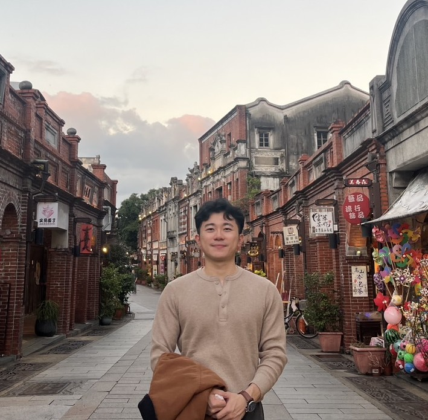
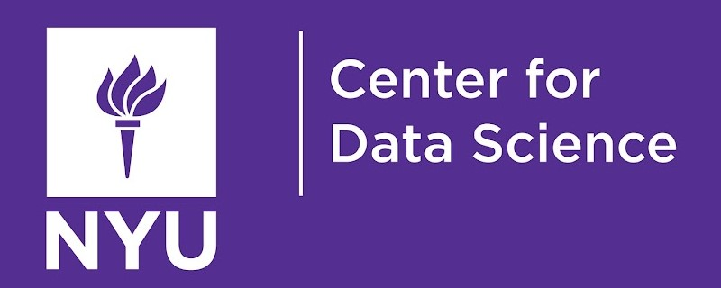

Hi there! I am a research data scientist at NYU Langone Medical Center with a strong interest in machine learning and statistics, particularly their applications in healthcare. My expertise encompasses both fundamental and practical aspects of machine learning and deep learning. Driven by a passion for extracting insights from complex datasets, I aim to use my skills for impactful data-driven research and innovation, developing open-source tools, and contributing to various industries.

MS in Data Science
B.S.M. in Quantitative Finance
Data Engineer
Data Scientist Intern - Product Team
Research Data Scientist
Project Assistant
Research Assistant